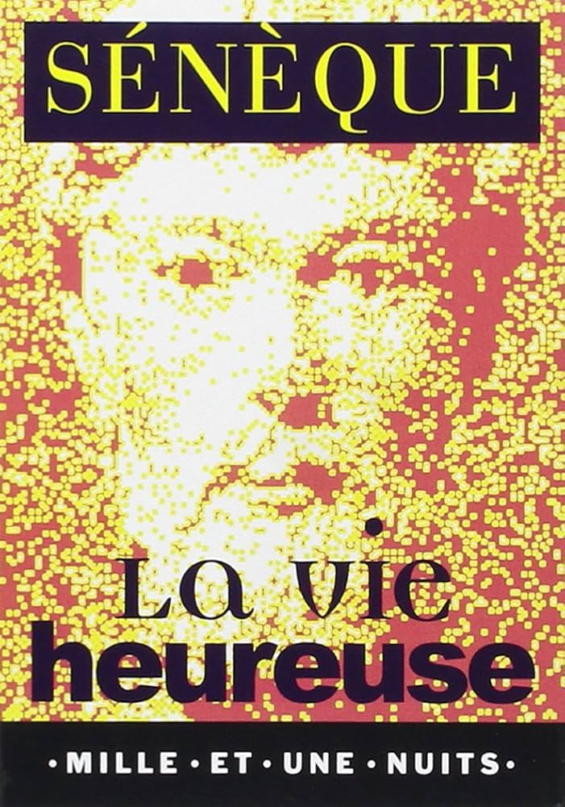
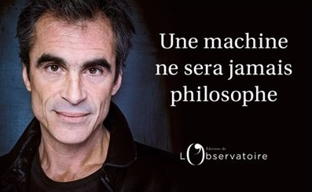
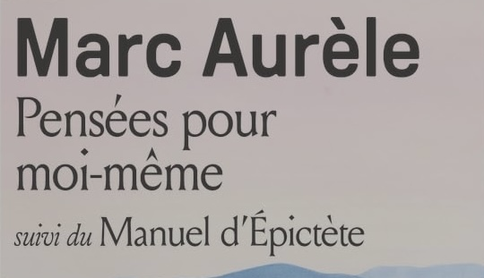
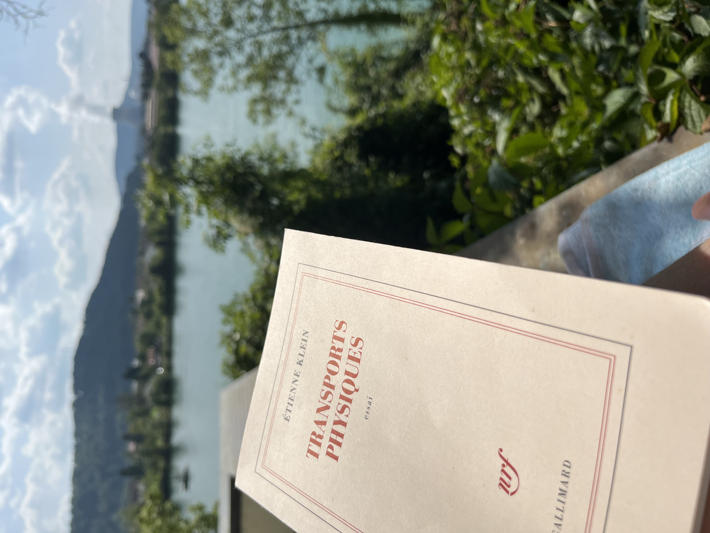
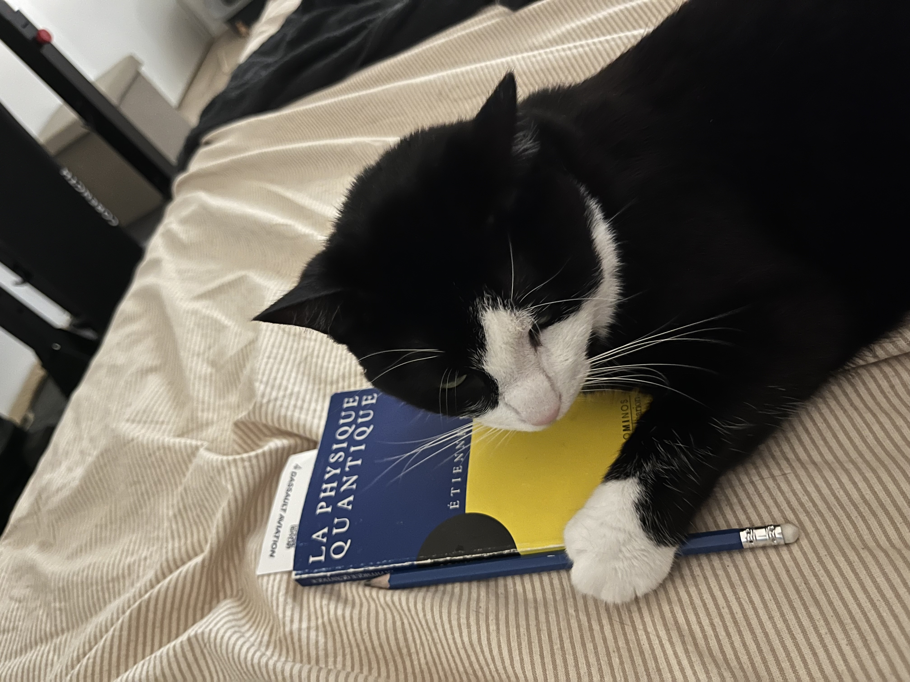
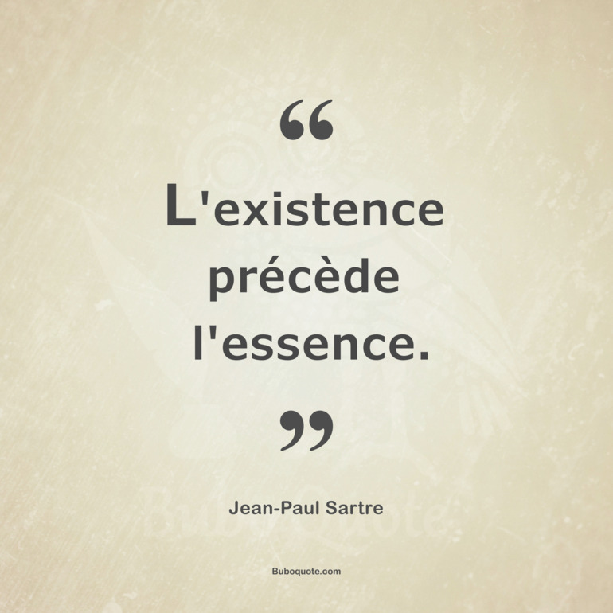
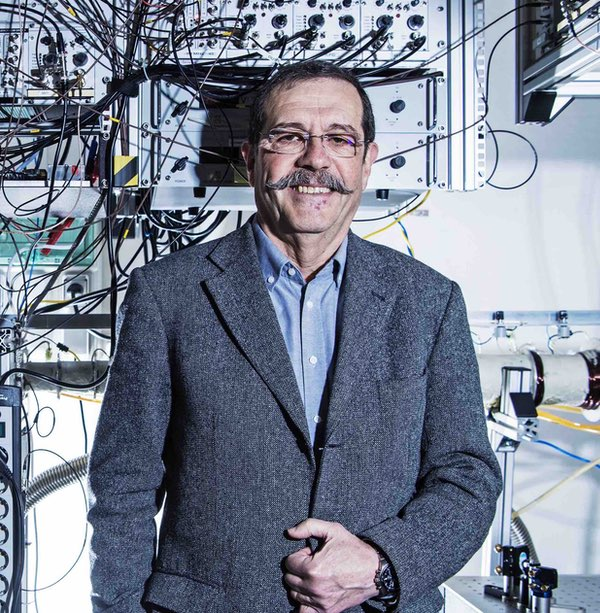

Lecture PhilosophieLa Vie heureuse — Sénèque
Un petit livre découvert au lycée et relu trois fois depuis : une réflexion sur le stoïcisme, notre rapport au bonheur, à la fortune et à ce qui dépend réellement de nous.
Lire la note →
Un espace où je rassemble quelques réflexions issues de mes expériences, de mes projets, de mes lectures et de mes découvertes.
Ces textes courts me permettent de garder une trace des idées, enseignements ou questionnements qui ont marqué mon parcours.

Lecture PhilosophieUn petit livre découvert au lycée et relu trois fois depuis : une réflexion sur le stoïcisme, notre rapport au bonheur, à la fortune et à ce qui dépend réellement de nous.
Lire la note →
'"> Lecture PhilosophieUne réflexion sur l'intelligence artificielle et la conscience, à travers le prisme de la philosophie et de la littérature (intéressante à l'ère de l'omnisprésence de l'IA).
En cours de rédaction →
'"> Lecture PhilosophieJ’ai longtemps attendu avant de lire Pensées pour moi-même, malgré mon intérêt pour le stoïcisme. Pourtant, au fil des pages, on se prend progressivement à cette lecture singulière et à ces réflexions très personnelles de Marc Aurèle, dont certaines finissent inévitablement par faire écho à notre propre vie.
En cours de rédaction →
'"> Lecture Philosophie & ScienceUne lecture à la frontière entre physique, histoire des sciences et philosophie, qui m’a particulièrement intéressé par sa manière de revenir sur les grandes idées de la physique tout en questionnant ce que nous croyons réellement comprendre du monde.
En cours de rédaction →
'"> Lecture Philosophie & SienceFasciné par la physique quantique depuis mes années de classe préparatoire, j’ai retrouvé dans cet ouvrage d’Étienne Klein les concepts et paradoxes qui rendent cette discipline si captivante.
En cours de rédaction →
'"> Lecture PhilosophieCe que j’ai particulièrement aimé dans L’Existentialisme est un humanisme, c’est son origine même : une conférence de Jean-Paul Sartre. En le lisant, on a presque l’impression de voir Sartre défendre directement ses idées, répondre aux critiques et préciser sa pensée autour de la liberté, et de cette idée que l’homme se construit avant tout par ses choix et ses actes "L'existence précède l'essence".
En cours de rédaction →
'"> Lecture ScienceUn ouvrage qui m’a permis de mieux comprendre les expériences d’Alain Aspect et leur importance dans l’histoire de la physique quantique (ayant valu un magnifique prix nobel à Alain Aspect en 2022, qui je dois l'avouer, m'a fait verser une larme).
En cours de lecture →